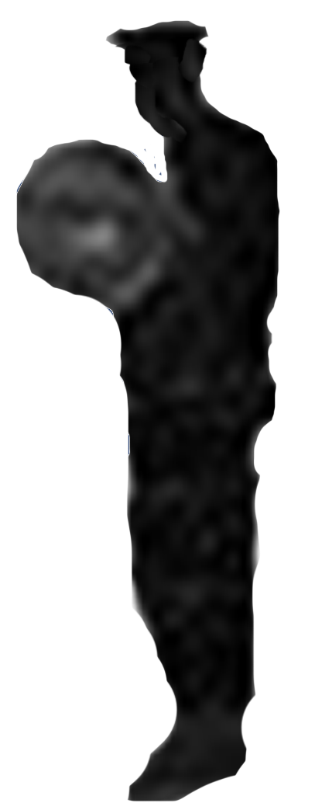

Back
Back

FIND THE GUARD / ΒΡΕΣ ΤΟΝ ΦΥΛΑΚΑ
(point and click game)
SO, WHY IS THERE SO MUCH TROUBLE WITH HOW IT'S APPLIED? THIS THURSDAY, AN ALABAMA DEATH ROW IMMATE KENNETH SMITH, HE SURVIVED AN EXECUTION BY LETHAL INJECTION ABOUT A YEAR AGO. NOW THEY ARE GOING TO USE A NEW METHOD. NYTROGEN. THAT'S NEVER BEEN TESTED IN THE UNITED STATES.
ΓΙΑΤΙ ΛΟΙΠΟΝ ΥΠΑΡΧΕΙ ΤΟΣΟ ΠΡΟΒΛΗΜΑ ΣΤΟ ΠΩΣ ΕΦΑΡΜΟΖΕΤΑΙ? ΑΥΤΗ ΤΗ ΠΕΜΠΤΗ, Ο ΚΑΤΑΔΙΚΟΣ ΘΑΝΑΤΙΚΗΣ ΠΟΙΝΗΣ ΚΕΝΕΘ ΣΜΙΘ ΑΠΟ ΤΗΝ ΑΛΑΜΠΑΜΑ, ΕΠΙΒΙΩΣΕ ΘΑΝΑΤΗΦΟΡΑ ΕΝΕΣΗ ΠΡΙΝ ΕΝΑ ΧΡΟΝΟ. ΤΩΡΑ ΘΑ ΧΡΗΣΙΜΟΠΟΙΗΣΟΥΝ ΜΙΑ ΝΕΑ ΜΕΘΟΔΟ. ΑΖΩΤΟ. ΔΕΝ ΕΧΕΙ ΠΟΤΕ ΔΟΚΙΜΑΣΤΕΙ ΣΤΙΣ ΗΝΩΜΕΝΕΣ ΠΟΛΙΤΕΙΕΣ.